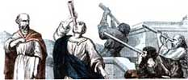

1988 Almanac For Skygazers
By Fred Schaaf
January/February 1988
Previewing a real star-studded show.
The year 1988 should be a very rich one for folks who watch the heavens. The two most spectacular meteor showers will not be obscured by moonlight at their peak hours, some of the United States will experience a partial eclipse of the Moon, sunspots and northern lights should certainly be on the increase, and Comet Borrelly will probably be visible to advanced observers with binoculars.
And then there will be the planets.
Earth's brothers and sisters should be the greatest attractions of all in 1988. Jupiter and Saturn will put on better shows than for many years to come, and Venus will offer perhaps its best displays as Evening Star since 1980. But more interesting than any of these sights - even more interesting than the great conjunction (meeting) of Venus and Jupiter in the March evening sky - will be two events. One is the first conjunction (there will be three of these) of Saturn and Uranus since World War II. The other is the closest, brightest, most awesome approach of mighty red Mars to take place in the last quarter of the twentieth century.
Here are the prospects for this year in the heavens, saving the best (the planets) for last.
Eclipses
There will be four eclipses in 1988. It is the two lunar eclipses which some of America will see. The first, on March 3, will be a penumbral eclipse of the Moon even closer to being partial than that of October 7, 1987. In this event, which people in Hawaii will see in the latter part of the night and mainlanders will miss, the Earth's umbra, or central shadow, will pass breathtakingly, close to the Moon's edge. What will be visible is the inner penumbra, which should cause a distinct darkening on the lower part of the Moon. Less unusual but more interesting will be the partial eclipse of the Moon on August 27. The very dark umbra will slide across the upper part of the Moon, extending across a maximum of 29% of the lunar disk at 4:05 a.m. Pacific daylight time. From the West Coast of the U.S. this best part of the eclipse will be visible without interference from twilight. Farther east, less and less of the event will be seen, with the East Coast missing the event entirely, due to moonset and sunrise.
The first of this year's two solar eclipses will be a good total eclipse visible from parts of Indonesia and the Pacific on March 18; the second, a poor annular eclipse visible from the Indian Ocean on September 11. In the former event, total eclipse will last as long as three minutes, 46 seconds; in the latter, a maximum of 94% of the Sun's width will be covered by the Moon.
Meteor Showers
A meteor shower could be described as an unusual number of meteors ("shooting stars") coming from one area of the heavens. Each year the major meteor showers occur on about the same dates. But from year to year, viewing is occasionally spoiled by the presence of a bright Moon in the sky. In 1988 the Moon will disturb observations of the Quadrantid meteors of January, the Eta Aquarids of May and the Delta Aquarids of July. The other major showers should be undisturbed, although the best shows will only be seen in very clear weather many miles from city lights. Look for the Lyrids originating high in the east at a rate of up to 10 per hour around midnight on April 21-22. The Perseids, usually the best shower of all, will peak around August 13 with the Moon near new and with meteors flying out of the north at rates of 50, 60 or more an hour well after midnight. The Orionids will zoom out of the south in a moonless sky, at their best (five to 20 or more an hour) just before the start of morning twilight on October 21 and 22. The slow, bright Taurids will slide out of the south in the middle of the night during the first week of November (five or more an hour might be glimpsed). The very swift Leonids will also come from the south at their peak hour, which should be just before morning twilight on November 18 (five to 10 per hour expected). The Geminids will race from very high in the south in numbers that rival those of the Perseids in the hours after midnight on December 14 and 15.
THE SEASONS
Seasons
The seasons of 1987 all started later in the year than they will again until 2103. The seasons of 1988 will all start earlier than they have since 1896-97. Vernal equinox (spring's start) will be at 4:39 a.m. EST on March 20; summer solstice at 11:57 p.m. EDT on June 20; autumn equinox at 3:29 p.m. EDT on September 20; winter solstice at 10:28 a.m. EST on December 21.
LUNAR LORE
The dates are given in universal time, which is five hours ahead of eastern time, four hours ahead of eastern daylight time. (Thus March 15 in universal time begins at 7:00 p.m. EST of March 14, and June 10 in universal time begins at 8:00 p.m. EDT of June 9) (RIGHT) Sunlight, reaching the Moon from the upper left in this illustration, illuminates our satellite and creates its phases: (1) new Moon, (2) crescent, (3) first quarter, (4) gibbous and (5) full. The Moon then wanes through the sequence in reverse. (BELOW) A calendar of Moon phases.
Events for 1988
A stellar tool for planetary planning.
One asterisk indicates the event is of special interest; two indicate even higher interest.
January
1 **
3
4
13
26 **
Venus, Jupiter, Sirius and constellation Orion brilliant in early evening sky.
Earth at perihelion, closest to Sun.
Quadrantid meteors spoiled by bright Moon.
Mars passes between two stars in head of Scorpius.
Mercury at greatest evening elongation; good chance to see it.
February
12 **
17
19 *
First Saturn-Uranus conjunction since 1944; two more this year.
Moon closest for 1988.
Moon, Venus, Jupiter groupings in west next few evenings.
22-23 **
Great compact trio of Mars, Saturn and Uranus (Eastern Hemisphere sees ultra-close Mars-Uranus conjunction).
29 *
Leap Day, or Bissextile Day.
March
6 **
7-8
18
19 *
20 **
Great Venus-Jupiter conjunction in west after sunset.
Mars-Neptune conjunction (requires telescope and experience to see).
Total eclipse of the Sun visible in parts of Indonesia and the Pacific.
Moon, Venus, Jupiter groupings in west next few evenings.
Spring begins at 4:39 a.m. EST (earliest in over 90 years).
April
3 **
3-4 **
21-22 **
Venus at greatest evening elongation, visible for over four hours after sunset.
Venus passes lovely Pleiades star cluster.
Lyrid meteors at around midnight.
May
4
6 **
19 **
30 **
31
Eta Aquarid meteors spoiled by bright Moon.
Venus at greatest brilliancy as Evening Star.
Mercury at greatest evening elongation; good chance to see it.
Around this time, Venus starts setting too soon after the Sun to view.
Second full Moon of the month.
June
12**
19-20**
20**
27**
30*
Venus passes through inferior conjunction and becomes Morning Star.
Saturn and Uranus reach opposition just five hours apart.
Summer begins at 11:57 p.m. EDT (earliest in over 90 years).
Second and best of this year's three rare Saturn-Uranus conjunctions.
Neptune at opposition.
July
1**
5
7
19 **
30
Look for Venus emerging low in east before sunrise as Morning Star.
Earth at aphelion, farthest from Sun.
Asteroid Vesta passes extremely close to star Eta in Leo (binoculars and experience needed to see it).
Venus at greatest brilliancy as Morning Star.
Delta Aquarid meteors spoiled by bright Moon.
August
8-10 **
12 **
Venus-Moon pairings in east before dawn.
Mars at perihelion (closest to Sun in space), already brilliant in the late evening sky.
13 **
Perseid meteors, may be best shower of year, at peak in after-midnight hours this date or tomorrow (both nights good).
26 **
27 **
Venus at greatest morning elongation before dawn in east.
Partial eclipse of the Moon for western North America.
September
1 *
10
11 *
22 **
24 *
25 **
27 **
Mars superb for next two months.
Annular eclipse of the Sun in the Indian Ocean; the farthest Moon of 1988.
Saturn at aphelion (farthest from Sun in space) - but see September 24.
Autumn starts at 3:29 p.m. EDT (earliest in over 90 years).
Saturn's rings tilted most open (favorable) they will be until after turn of the century.
Harvest Moon.
Mars at opposition, closest since 1971, stupendously bright all night.
October
4 **
17 **
21-22 **
26 **
Close Venus-Regulus conjunction before dawn (Moon near them a few mornings from now).
Third Saturn-Uranus conjunction of year; last one until 2032.
Orionid meteors after moonset and before morning twilight.
Mercury at greatest morning elongation; best chance of the year to see it before dawn.
November
1 *
Jupiter, between Pleiades and Hyades clusters, now distinctly brighter than fading Mars; this week Taurid meteors.
18 **
22 **
Leonid meteors visible before morning twilight.
Jupiter at opposition (brightest, closest, biggest of year).
December
14-15 *
20
21 **
Geminid meteors at best these nights.
Close Venus-Beta Scorpii conjunction low in southeast.
Winter begins at 10:28 a.m. EST
31 *
Still-bright Mars, far brighter Jupiter dominate evening sky with Orion (brightest constellation) and Sirius (brightest star).
The Planetary Years
Earth's solar sisters shine in 1988.
THE PLANETS RANKED BY DISTANCE FROM THE SUN
Mercury will be easily visible for only a few weeks around its "greatest elongations" (separations from the Sun) of the year. Even at those times the naked eye will see it as a bright point of light in the west only until about one hour after sundown or (in the east) starting about one hour before sunrise. In 1988 the best evening appearances will be around the greatest elongations on January 26 and May 19; the best morning appearance is around the greatest elongation on October 26.
Venus will, in 1988, be the Evening Star before it passes through inferior conjunction (almost directly between Earth and Sun) on June 12. This brightest planet is always spectacular when clearly visible, but this year's evening display of it will probably be the best, in the U.S., of all of Venus's eight-year cycle of recurring appearances. Venus will reach greatest evening elongation on April 3 when its 46° separation from the Sun will be almost vertical and the planet won't set until more than four hours after the Sun. At this time the planet will also be passing right along the southern fringes of the sky's loveliest star cluster, the Pleiades. (Less than a month earlier, on March 6, Venus was just 2 1/2° from the heavens' second brightest planet, Jupiter.) In February, March and April, the Moon will join these planets on several evenings after the 19th for gorgeous groupings. On May 6 Venus will be at greatest brilliancy - dazzling after sundown and so bright it will be visible with the naked eye in broad daylight if you know just where to look. In late May, Venus will set sooner and sooner after the Sun and loom as an ever taller but skinnier crescent in telescopes and steadily held binoculars. After being lost in the solar glare in June, it will begin to emerge before sunrise as the Morning Star, reaching greatest brilliancy again on July 19, greatest elongation (in the dawn sky) on August 26. For the rest of the year this lantern in the twilight will appear steadily lower in the east before dawn, but remain prominent.
Earth will be at perihelion (closest to the Sun in space) on January 3, and at aphelion (farthest from the Sun in space) on July 5. How can our planet be nearest to the Sun in cold winter and farthest in hot summer? The tilt of the Earth is more important to seasons than the slight variations in its distance from the Sun: On January 3, 1988, the planet will be closest to the Sun but the Northern Hemisphere nearly at its maximum tilt away from the Sun.
Mars got very close, bright and big in 1986, but this year it will be significantly better in all respects - in fact, far better than in any other year since 1971 or until 2003. Not until that latter date will we again see Mars plainly outshine Jupiter, or pull to within 40 million miles of Earth, or show not just a few but dozens of delicate features on good, steady nights (when there is little star-twinkling) in moderate-sized amateur telescopes.
The year will begin with Mars only as bright as a typical bright star, rather low in the southeast before dawn. But it is there, on February 22, that viewers in the Eastern Hemisphere will see Mars pass only about 1/45 of the Moon's apparent diameter away from Uranus - the closest conjunction of two planets between 1942 and 2013. Then, on the mornings of the 22nd and 23rd, Americans will be able to view the most compact trio (tight grouping of three planets) easily observable until 2006: Mars, Saturn and Uranus all contained within a circle less than 1.4° wide (about the width of your little finger held out at arm's length). Saturn will be slightly brighter than Mars then, but Uranus will require at least binoculars to be seen plainly.
By late May, Mars will be rising in the middle of the night in Aquarius and will begin to outshine the brightest stars then visible. As summer passes, the planet will rise earlier and earlier in the night and rapidly become a sky-dominating reddish beacon. The climax will arrive as autumn starts. On September 27 Mars will reach opposition - opposite the Sun in the sky and therefore rising at sunset and visible all night long. Around opposition is also the time when planets farther from the Sun than Earth get closest, biggest and brightest in our sky. Mars will be brightest on September 26 and closest on September 21 - just 36.3 million miles away, closer than any planet except Venus can get. On a steady night a small telescope may show a white polar cap of Mars and many greenish gray features on its ochre-colored globe. The most prominent feature is often the roughly triangular Syrtis Major. If you see a certain feature one evening, Mars' daily rotation of 24 1/2 hours will bring it to the same position 1/2 hour later on the following (Earth) evening.
The key to seeing much on Mars (and other planets) in the telescope is observing on many nights and being patient enough to wait for moments of atmospheric calm in which the delicate details can suddenly appear with astonishing clarity. Your telescope should have a main lens or mirror of more than two or three inches in diameter and should be in good working condition. And you should remember that, whether or not you have a telescope, the naked-eye views of Mars this year will be wondrous.
Jupiter will become almost as big and bright as it did last year, which was by a slight margin the best in its 12-year orbit. There are 12 (traditional) constellations of the Zodiac, and Jupiter spends about one year in each one. This year it will glide across Taurus the Bull, having some splendid conjunctions with the great star clusters there. But Jupiter's first conjunction of the year will be its spectacular meeting in the western evening sky with even brighter Venus on March 6. A month and a half later, Jupiter will set too soon after the Sun to be visible. After it passes conjunction with the Sun on May 2, this giant world will very slowly come into view before sunrise in the last weeks of spring. During summer, Jupiter will be steadily brightening and rising a little earlier each night. By midsummer its golden point of light will be quite near the beautiful, little, dipper-shaped Pleiades star cluster. By November Jupiter will lie about halfway between the Pleiades and the large, V-shaped Hyades cluster which, with bright orange star Aldebaran, outlines the face of Taurus the Bull. That is the month and place that Jupiter will reach opposition, its best position of the year. The event will occur on November 22 with Jupiter visible all night - closest, biggest and brightest.
Saturn and Uranus should be considered together this year because they will be within a few degrees of each other all year and achieving three conjunctions with each other. Not since 1944 have these two slow, outer planets been paired near each other in the sky, and they will not be again until the year 2032.
Saturn will be easily visible to the naked eye, rivaling the brightest stars of spring and summer when it reaches peak brightness for the year in June. Uranus will be glimpsed only faintly with the naked eye on clear country nights, and then only if one knows just where to look. To see it properly and fully appreciate its pairings with Saturn, binoculars or telescope should be used and an astronomy magazine or advanced astronomy almanac consulted. (Sky and Telescope and Astronomy are the prime astronomy magazines; in my opinion, the best annual astronomy almanac is Guy Ottewell's Astronomical Calendar, available for $12 from Astronomical Workshop, Forman University, Greenville, SC 29613.) By the way, only a telescope with a magnification of about 40x will, on a good night, show Uranus as a tiny disk.
Saturn will be just about as bright this year as it was last, and will be getting dimmer for many years after 1988. That may seem strange when you consider that Saturn reaches aphelion (farthest out point in its immense 29 1/2-year-long orbit) this September 11. Shouldn't Saturn therefore be very faint this year and brighter in the following ones? The catch is that also this year (on September 24) the gorgeous rings of Saturn will be tilted so as to be most "open" to us (about 27° from edge-on). This means the broad upper side of the highly reflective rings (countless ice balls orbiting the planet) will be best displayed to us. Over half the radiance your naked eye will see coming from the point of light of Saturn this year will be from the rings!
The dance of Saturn and Uranus will begin with their first conjunction, before dawn on February 12 in the southeast sky. Less than two weeks later Mars will glide in to pass near (to our line of sight) to them (see entry on Mars above for details on this marvelous grouping and the ultra-close conjunction of Mars and Uranus).
The second Saturn-Uranus conjunction will take place on June 27, when the two planets will be near opposition and thus visible all night as they cross the south sky near the border between constellations Sagittarius and Ophiuchus. The actual night of opposition for both planets will be June 19-20. In fact, Saturn and Uranus will reach opposition only five hours apart - probably the closest coincidence of two planets' oppositions in the twentieth century.
The last Saturn-Uranus conjunction for 44 years will occur low in the southwest evening sky on October 17. Like the earlier two, it will feature the planets little more than a degree apart (which is close, although not extremely close).
Neptune will be several times fainter than Uranus and thus will require a telescope to be seen well; you won't locate it at all without detailed finder charts. The best time to look for this planet is around its opposition, this year on June 30, just 10 days after those of Saturn and Uranus. In August 1989 the Voyager 2 spacecraft should reach Neptune and show us whether that planet has rings and more than the two strange moons it is already known to have.
Pluto in 1988 will be on the celestial equator, near the meeting place of constellations Virgo, Libra and Serpens Caput. It will be nearer to us and the Sun than Neptune (something which is true for only about 20 years of its 248-year-long orbit). As a matter of fact, Pluto will reach perihelion, closest to the Sun in space, next year for the first time since George Washington was a child. Even next year, however, Pluto will appear so small and faint that only an advanced amateur astronomer with a fairly large telescope will be able to find it. In 1988 Pluto will reach opposition on May Day.
The Granger Collection
Astronomer Fred Schaaf, whose third book on the subject, The Starry Room, will soon be available from Dodd, Mead and Co., has been a regular contributor to MOTHER's Almanacs .
|
Meteor showers have fascinated and frightened mankind since we first looked at the sky. |
Our understanding was aided by Galileo's invention of the telescope. |
Through Halley's comet(left) won't appear this year, the night sky will have its share of spectaculars. (right) A dramatic view of the Milky Way. |
|
Pluto (3,675.27 million miles) |
Neptune( 2,795 million miles) |
Uranus (1,783.98 million miles) |
|
 Saturn (887.14 million miles) |
Jupiter (483.88 million miles) |
Mars (141.71 million miles) |
|
Earth (93 million miles) |
 Venus (67.27 million miles) |
Mercury (36 million miles) |
|
|
|
|
|
|
|
|